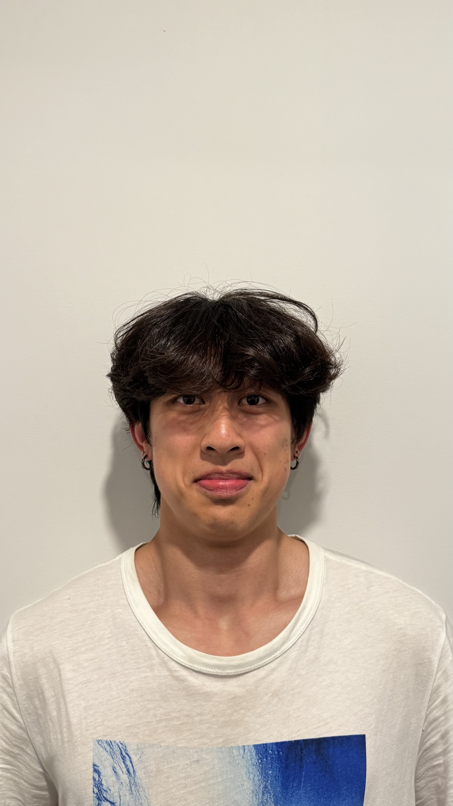
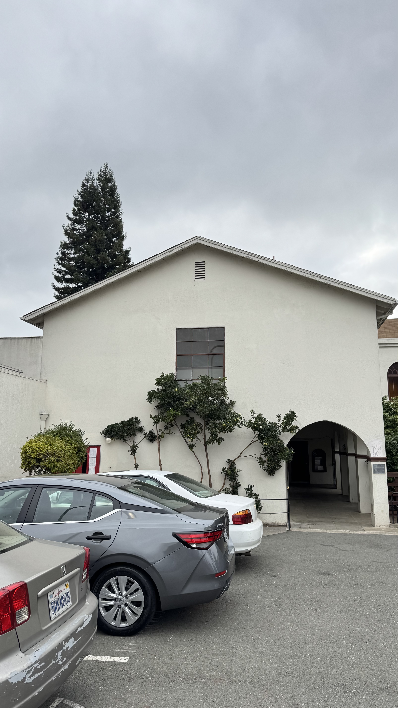
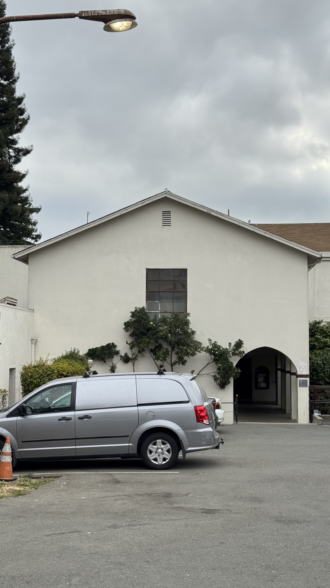

Project 0: Becoming Friends with Your Camera
CS180 — Intro to Computer Vision and Computational Photography
Part 1: Selfie — The Wrong Way vs. The Right Way
In this experiment, I asked a friend of mine to take some photos of me by changing the distance between the camera and me while adjusting the zoom to observe how perspective affects facial proportions.
Photo 1
Description here.

Photo 2
Description here.

Photo 3
Description here.
Photo 4
Description here.

Photo 5
Description here.
Part 2: Architectural Perspective Compression
Here I photographed the same architectural subject from different distances while changing the focal length.

Near + Wide Angle
Description here.

Far + Zoom In
Description here.
Part 3: The Dolly Zoom


Dolly Zoom
These two GIFs are from some older footage I shot with a DJI Flip. I tried to keep the drone flying backward at a steady speed while using a custom dial to control the zoom level (digital cropping), gradually zooming in as the drone moved farther away. This keeps the subject approximately the same size in the frame while changing the perspective of the background, producing the classic dolly zoom effect. The final result turned out pretty well, although it’s still a little rough. Anyone who’s flown a drone before will understand just how much finger control it takes to manually pull off a Hitchcock zoom like this. P.S Please ignore my wink smh, i was just a dumbass freshman flying drone all over the campus everday.